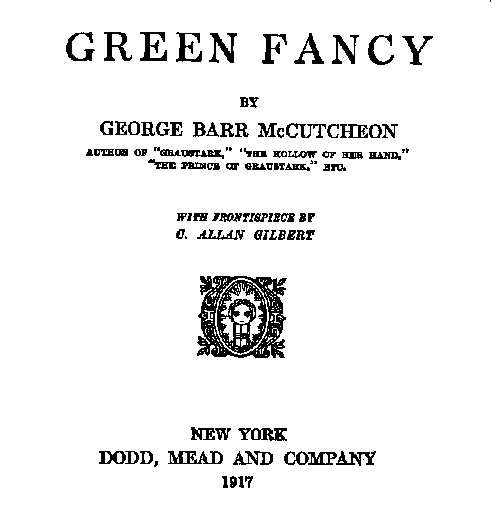
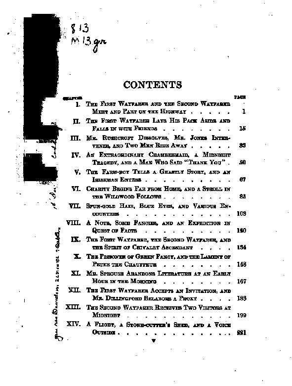
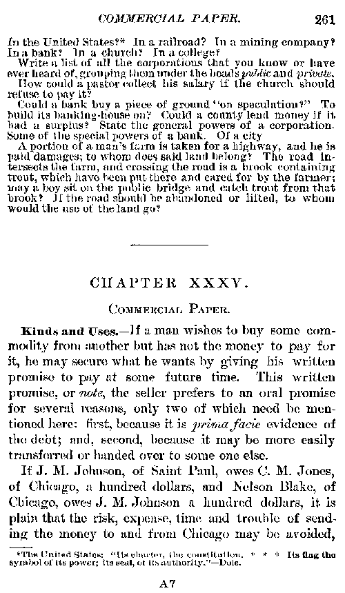
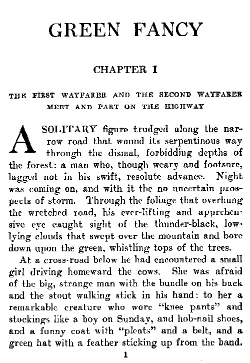
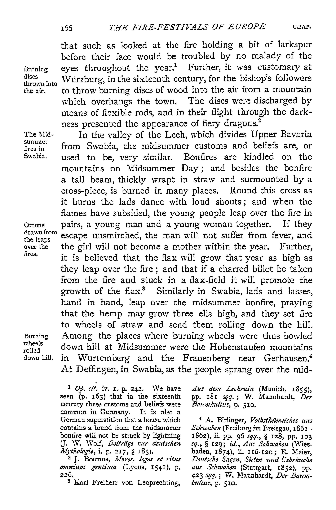
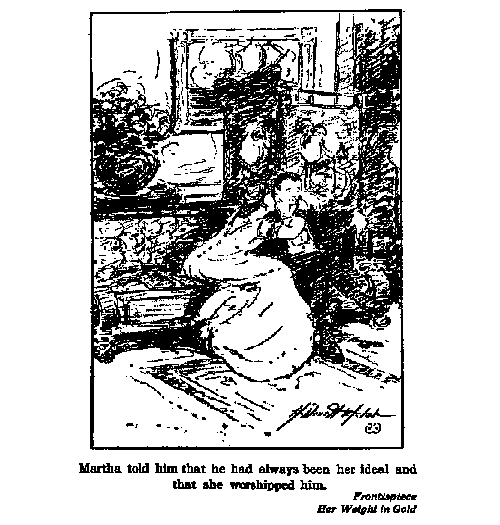
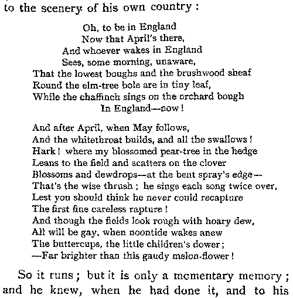

Distributed Proofreaders Document Guidelines Version
1.21 - Minor spelling/grammar errors fixed
Update the Sourceforge CVS tree with any updates or send a PM to Aldarondo.
Table of Contents
About This Document
Formatting of The...
Common Problems
About This Document
This document is written in order to resolve formatting differences done by proofreaders on a variety of items. This will make the post-proofreader's work easier and will increase the quality of the books that are created through this site. Items that are to be typed by you will be formatted like this. All possible items that a new user would ask about formatting have been included in this document. If there are any items that you consider should be done differently or if something is vague, please let us know. This document is a work in progress and items marked with a ~ are links have been completed so far.
Formatting of The...
Due to Project Gutenberg procedures, only the title and author will be put into the title page for final release of the book. Remove all references to year, city of publication, publisher, copyright date, etc. These pages are left in to simplify uploading of the project and for the folder to have the complete book in it for future reference.
|
Sample Image |
|  |
|
Correct Text |
|
GREEN FANCY BY |
All page numbers should be removed from the table of contents, along with ... or *** used to align the page numbers. Due to converting the book to electronic form, the page numbers will be removed from the entire book.
|
Sample Image |
|
 |
|
Correct Text |
|
CONTENTS CHAPTER I. THE FIRST WAYFARER AND THE SECOND WAYFARER MEET AND PART ON THE HIGHWAY II. THE FIRST WAYFARER LAYS HIS PACK ASIDE AND FALLS IN WITH FRIENDS III. MR. RUSHCROFT DISSOLVES, MR. JONES INTERVENES, AND TWO MEN RIDE AWAY IV. AN EXTRAORDINARY CHAMBERMAID, A MIDNIGHT TRAGEDY, AND A MAN WHO SAID "THANK YOU" V. THE FARM-BOY TELLS A GHASTLY STORY, AND AN IRISHMAN ENTERS VI. CHARITY BEGINS FAR FROM HOME, AND A STROLL IN THE WlLDWOOD FOLLOWS VII. SPUN-GOLD HAIR, BLUE EYES, AND VARIOUS ENCOUNTERS VIII. A NOTE, SOME FANCIES, AND AN EXPEDITION IN QUEST OF FACTS IX. THE FIRST WAYFARER, THE SECOND WAYFARER, AND THE SPIRIT OF CHIVALRY ASCENDANT X. THE PRISONER OF GREEN FANCY, AND THE LAMENT OF PETER THE CHAUFFEUR XI. MR. SPROUSE ABANDONS LITERATURE AT AN EARLY HOUR IN THE MORNING XII. THE FIRST WAYFARER ACCEPTS AN INVITATION, AND MR. DlLLINGFORD BELABORS A PROXY XIII. THE SECOND WAYFARER RECEIVES TWO VISITORS AT MIDNIGHT XIV. A FLIGHT, A STONE-CUTTER'S SHED, AND A VOICE OUTSIDE
|
Blank pages may be in the project you are working on due to the original book having a blank page and us trying to cut down on the work needed to find the page, remove it, and renumbering the remaining pages. Please put in the text box [Blank Page] if both the text box and the image are blank. If only one of them is blank, follow the directions for a Bad Image or Bad Text.
Page headers and non-footnote footers need to be removed from the text. The page headers are normally at the top of the image and have a page number versus. A chapter header will start farther down the page and won't have the page numbers.
|
Sample Image |
|  |
|
Correct Text |
| In the United
States? [Footnote: The United States: "Its charter, the constitution. * * * Its flag the symbol of its power; its seal, of its authority."--Dole.] In a railroad? In a mining company? In a bank? In a church? In a college? Write a list of all the corporations that you know or have ever heard of, grouping them under the heads <i>public</i> and <i>private</i>. How could a pastor collect his salary if the church should refuse to pay it? Could a bank buy a piece of ground "on speculation?" To build its banking-house on? Could a county lend money if it had a surplus? State the general powers of a corporation. Some of the special powers of a bank. Of a city. A portion of a man's farm is taken for a highway, and he is paid damages; to whom does said land belong? The road intersects the farm, and crossing the road is a brook containing trout, which have been put there and cared for by the farmer; may a boy sit on the public bridge and catch trout from that brook? If the road should be abandoned or lifted, to whom would the use of the land go? * * * * * CHAPTER XXXV. COMMERCIAL PAPER. KINDS AND USES.--If a man wishes to buy some commodity from another but has not the money to pay for it, he may secure what he wants by giving his written promise to pay at some future time. This written promise, or <i>note</i>, the seller prefers to an oral promise for several reasons, only two of which need be mentioned here: first, because it is <i>prima facie</i> evidence of the debt; and, second, because it may be more easily transferred or handed over to some one else. If J. M. Johnson, of Saint Paul, owes C. M. Jones, of Chicago, a hundred dollars, and Nelson Blake, of Chicago, owes J. M. Johnson a hundred dollars, it is plain that the risk, expense, time and trouble of sending the money to and from Chicago may be avoided, |
Chapter headers need to be left in the text. A chapter header will start a bit farther down the page and won't have the page numbers. Change the first word of the chapter that is normally capitalized to a non-capitalized word, unless it's bold text. Watch out for a missing double quote at the start of the first paragraph, which some publishers did not include or which the OCR missed due to a large capital in the original. A blank line is needed between the "CHAPTER XXX" and the chapter description.
|
Sample Image |
|  |
|
Correct Text |
| GREEN FANCY CHAPTER I THE FIRST WAYFARER AND THE SECOND WAYFARER MEET AND PART ON THE HIGHWAY A solitary figure trudged along the narrow road that wound its serpentinous way through the dismal, forbidding depths of the forest: a man who, though weary and footsore, lagged not in his swift, resolute advance. Night was coming on, and with it the no uncertain prospects of storm. Through the foliage that overhung the wretched road, his ever-lifting and apprehensive eye caught sight of the thunder-black, low-lying clouds that swept over the mountain and bore down upon the green, whistling tops of the trees. At a cross-road below he had encountered a small girl driving homeward the cows. She was afraid of the big, strange man with the bundle on his back and the stout walking stick in his hand: to her a remarkable creature who wore "knee pants" and stockings like a boy on Sunday, and hob-nail shoes, and a funny coat with "pleats" and a belt, and a green hat with a feather sticking up from the band. |
Some books will have descriptions
of the paragraph along the side of the text. These need to be moved above
the paragraph that they belong to.
|
Sample Image |
Correct Text |
|  |
[Sidenote: The comparative size of the image depends on |
Do not indent the start of paragraphs. There should be a blank line between paragraphs. See the Chapter Headers image/text for an example.
Break up multiple-column text into a single column. Place the left-most column first and then the next one after it, and so on.
Text for an illustration should be surrounded by [Illustration: ]. If there is no text, just place [Illustration] there. If it is in the middle of a paragraph or on the side of a paragraph, move the [Illustration: ] to either above or below the paragraph, based on where you can put it without it being in the middle of a paragraph.
|
Sample Image |
|  |
|
Correct Text |
|
[Illustration: Martha told him that he had always been her ideal
and |
Footnotes should be moved to where they are referenced on the page and surrounded by [Footnote: ]. If a footnote is a continuation of a footnote on a previous page, move it to the top of the page, surround it with [Footnote: ], and put a * before it. If a footnote continues on the next page, it should be moved to where it is referenced on the page, surrounded by [Footnote: ], and marked with a * at the end of it. If a footnote/endnote is referenced in the text but does not appear on that page, surround the footnote/endnote marker with the [Footnote: ] and put a * next to it. See the Page Headers/Footers image/text for an example footnote.
Every portion that is italicized should have a <i> inserted at the start and a </i> inserted at the end of the italics. If it is at the start of a page, place a * in front of the <i> so that the post-proofreader can see if there is more on the previous page. If it is at the end of a page, place a * after the </i> so that the post-proofreader can see if there is more on the next page. Punctuation goes OUTSIDE the italics, unless it is an entire sentence or section that is being italicized. That is not a big deal, but is an answer for those curious. See the Illustration image for an example of how to do the italics.
Capitalize bold text. If it's the first word of a chapter and it's in bold, capitalize it. See the Page Header/Footers image/text for an example.
Remove the end-of-line hyphenation,
unless it really is a hyphenated word like well-meaning. Please join the two
halves of a previously hyphenated word. See the Chapter Headers image for
two examples of each kinds (nar-row turns into narrow, but low-lying keeps
the hyphen). Words like to-day and to-morrow that we don't commonly hyphenate
were often hyphenated in the books we are working on.
Mark the end-of-line hyphenation with a * after the hyphen. On pages that start with part of a word from a previous page, place a * before the word.
Please use two minus signs with no space on either side for the em-dash. For longer em-dashes, use 4 signs. There are a few occasions that rule is broken, such as when it is being used instead of a name or number, as in Mr B---- or -- Charing Rd, where it is appropriate to leave the spaces. If a line in the middle of a paragraph starts or ends with one, join it with the other line so that there is no space or line breaks around it.
|
Sample Image |
Correct Text |
| |
"She sha--<i>won't!</i>" |
Remove any extra space in contractions, e.g. would n't should be wouldn't
Please place a /* at the start of the poetry and a */ at the end of the poetry. This will help the post-processor find the poetry quicker to see what not to reformat. If it starts at the beginning of the page, put a * before the /* and if it is at the end of the page, put a * after the */.
|
Sample Image |
|  |
|
Correct Text |
|
/* Pansies, lilies, kingcups, daisies, Let them live upon their praises; Long as there's a sun that sets, Primroses will have their glory; Long as there are violets They will have a place in story; But for flowers my bowls to fill, Give me just the daffodil. */ As Wordsworth ought to have said. |
For poetry, use 2 spaces for indenting it. Do not try to center the text; leave it aligned on the left margin. Try to follow the format of the original if some lines are indented more than others, except for the start of paragraphs, which should be aligned on the left margin.
Leave letters unindented, like you would for Paragraph Spacing/Indentation.
Tables should be formatted with spaces to look approximately like the original table. The width of a table should not go beyond 70 characters and should be surrounded with /* */ like the Poetry Marking example above.
Single spacing around quote marks and punction is the correct formatting for the text. Please try to just use the " double quote, since the directional double quotes will have to be replaced to make it ASCII compliant. Do not change single quotes to double quotes. See the Chapter Headers image and text for an example.
Single quotes are used for a variety of purposes. They sometimes are used throughout where current usage would be double quotes and they should be left alone. The are also used for slang of words or shortened version. Try to put them how the image has them. Last of all, please try to just use the ' single quote to make it easier for everyone.
Single space after periods (vice two spaces). See the Chapter Headers image and text for an example.
Leave all line breaks in so that the next proofreader can compare the text easily. Extra blank lines that are not in the image should not be included. See the Chapter Headers image and text for an example.
Remove all line numbers that exist in the text. Since the text will be reformatted later, they will not be helpful.
Extra Spacing/Stars/Line Between Paragraphs
Some pages will have extra spacing between
paragraphs due to "thought breaks", change in scene, or a bit of suspense. These are
intended by the author, so we preserve them by putting a blank line, 5 *'s indented 7
spaces and then 7 spaces apart so:
end of text.
* *
* *
*
Text again.
See the Page Headers/Footers image/text for an example.
Leave a space before the three dots, and a space after.
The exception is at the end of a sentence, when there would be no space, four dots, and a space after.
For example:
This is the end.... That I know ... is true.
Try to put in
proper foreign characters. For Windows, you can use the character map program
(Start: Run: charmap) to select an individual letter, there are also Alt+NumberPad codes you can type in, and
they're a lot quicker. You hold the Alt key and type the four digits on the
Number Pad -- the number row over
the letters won't work. You must type the leading 0.
There is a problem with using accented characters -- they are upper ASCII,
or characters above code 127. This can cause display problems for any computer
not using the Western European character set (MS Windows codepage 1252 /
ISO 8859-1 or -15). Furthermore, Apple never accepted ISO8859 and some characters
don't match up (a good example is the curly open quote (0147), which Apple
maps to an accented capital O). Use with caution.
Note that
the capital version of a letter is 32 less than the lower case. The most commonly
needed (German, French, Spanish):
ä - 0228
Ä - 0196
ö - 0246
Ö - 0214
ü - 0252
Ü - 0220
ß - 0223
ç - 0231
Ç - 0199
é - 0233
É - 0201
ê - 0234
Ê - 0202
è - 0232
È - 0200
à - 0224
À - 0192
á - 0225
Á - 0193
ò - 0242
Ò - 0210
ó - 0243
¡ - 0161
¿ - 0191
ñ - 0241
Ñ - 0209
ì - 0236
Ì - 0204
í - 0237
Í - 0205
Æ - 0198
æ - 0230
© - 0169
£ - 0163
Once you get used to the codes, they're a lot faster
than using charmap cut&paste.
On a Mac to get an accent égu (é, á, etc.) , press opt-e, then the letter that you want the accent to be on. To get an accent grave (è, à, etc.) , press opt-tilde and the letter that you want the accent to be on. To get an accent circonflexe (û, î, etc.), press opt-i and the letter you want the accent to be on. To get the two dots (like this: ü), press opt-u and the letter that you want them to be over. C cedille (ç)is opt-c.
For Greek text, view the Greek to ASCII Primer from Project Gutenberg. For fractions, convert 2 ½ to 2-1/2.
Some non-fiction works will reference themselves by giving a page number to go to, for eg: (see p. 538). Please leave these references that are within the text, but remove page numbers from the Table of Contents, as described above. Do not mark these with a * either, unless the project manager specifies something specific to do with them.
Don't bother putting spaces at the ends of lines of text. Waste of your time for something that we can take care of automatically later. Similarly don't waste time taking _out_ extra spaces at the ends of lines.
Mark all actor names in italics if they are Italics in the original text, mark them as bold if they are Bold in the original text.
Do not include handwritten notes in a book, unless it is impossible to read the text that the handwritten note is replacing.
If an image is bad (not loading, chopped off, unable to be read), please put a post about this bad image in the project comments forum. Do not click on “Quit without Saving”; if you do, the next person will get that page. Click on your back button to the project listing page or go back to http://texts01.archive.org/dp/tools/proofers/proof_per.php until we create a better method in the coming weeks.
If there is a wrong image for the text given, please put a post about this bad image in the project comments forum. Do not click on “Quit without Saving”; if you do, the next person will get that page. Click on your back button to the project listing page or go back to http://texts01.archive.org/dp/tools/proofers/proof_per.php until we create a better method in the coming weeks.
If the previous proofreader caused a large amount of errors, you can send them a message by clicking on their name. That will allow you to send them a forum message.
Due to printer errors, there can be some misspellings. If you believe these to be true printer errors, then you should fix them. Some may be due to differences in spelling of words from a long time ago. Do not try to correct those to modern English.
Items that you are uncertain about, please mark with a *. The person proofreading it next can look it over and decide if they know what to do with it. Please be frugal with such marks though, because the post-processor will need to look at each one and it will take longer to create a final text.